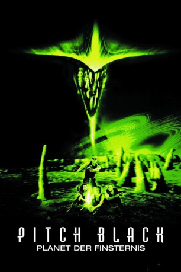

#1544 Pitch Black - Planet der Finsternis
Alternativ: Pitch Black
 
 IMDB-Wertung: 7.1 / 10
IMDB-Wertung: 7.1 / 10  Metascore: 49
Metascore: 49 
Eine Gruppe von Weltallreisenden landet nach einer Raumschiffpanne auf einem Planeten abseits aller bekannten Routen. Unter den Gestrandeten befindet sich auch der verurteilte Serienmörder Riddick, der nun die Gelegenheit nutzt, den Ketten Ade zu sagen und seine Bewacher bzw. sämtliche Mitreisende zu einer Partie Schnitzeljagd einzuladen. Doch damit nicht genug der Probleme: In den Überresten einer menschlichen Expeditionsstation findet man Hinweise auf eine aggressive Alienpopulation, die immer dann in Aktion tritt, wenn Dunkelheit auf den Planeten fällt...
Jahr: 2000
Dauer: 109 Minuten
FSK: 16
Land: USA Studio: USA FilmsTonspuren: DD5.1 - ,
Untertitel: Deutsch,
Auflösung: 1080p (1920x816) Größe: 9216 MB
Genre: Action, Horror, Sci-Fi
Regisseur:  David Twohy
David Twohy
Drehbuch: Jim Wheat, Ken Wheat, Jim Wheat, Ken Wheat, David Twohy
Soundtrack: Graeme Revell
Darsteller:
 Vin Diesel als Richard B. Riddick
Vin Diesel als Richard B. Riddick Radha Mitchell als Carolyn Fry
Radha Mitchell als Carolyn Fry Cole Hauser als William J. Johns
Cole Hauser als William J. Johns Keith David als Abu 'Imam' al-Walid
Keith David als Abu 'Imam' al-Walid Claudia Black als Sharon 'Shazza' Montgomery
Claudia Black als Sharon 'Shazza' Montgomery- Rhiana Griffith als Jack / Jackie
- Simon Burke als Greg Owens
- Les Chantery als Suleiman
 Firass Dirani als Ali
Firass Dirani als Ali Lewis Fitz-Gerald als Paris P. Ogilvie
Lewis Fitz-Gerald als Paris P. Ogilvie- John Moore als John 'Zeke' Ezekiel
- Sam Sari als Hassan
- Ric Anderson als Total Stranger
- Vic Wilson als Captain Tom Mitchell
 Angela Moore als Dead Crew Member
Angela Moore als Dead Crew Member- Ken Twohy als Spaceship Traveler in Cryo , uncredited
Datei: X:\3-Trilogie(N-Z)\Riddick\Pitch Black - Planet der Finsternis (2000, FSK16, 1920x816).mkv seit 15.07.2015
Festplatte: HD Collection-3(N-Z)-6(A-Z)
 Alle Filme aus Gruppe '3-Trilogie(N-Z)\Riddick'
Alle Filme aus Gruppe '3-Trilogie(N-Z)\Riddick'